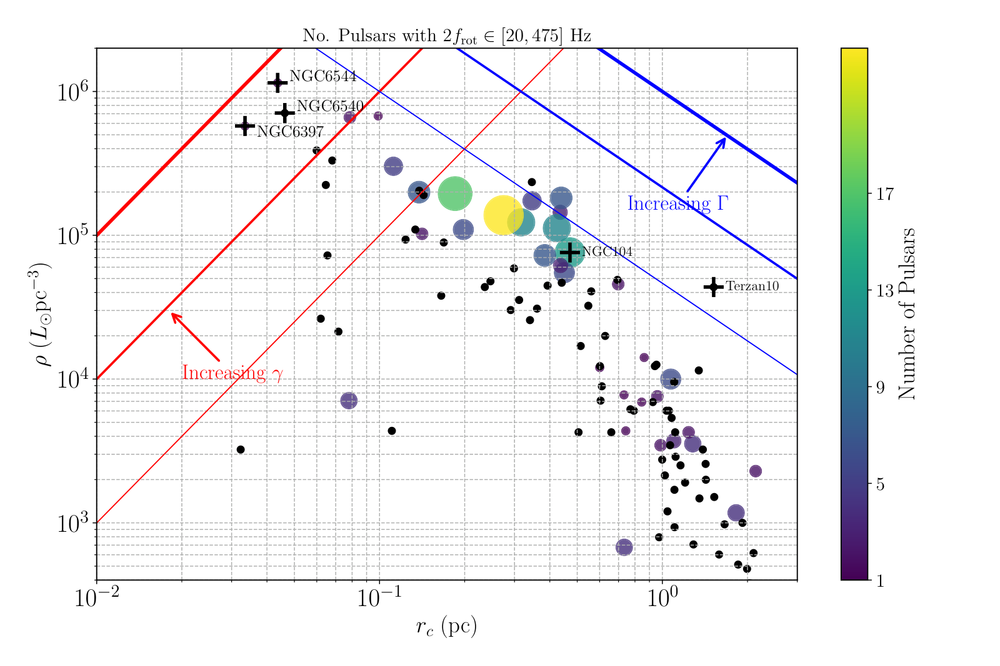
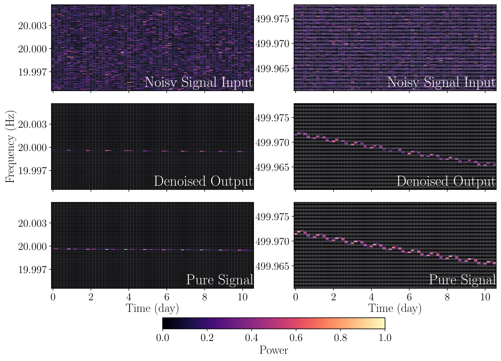
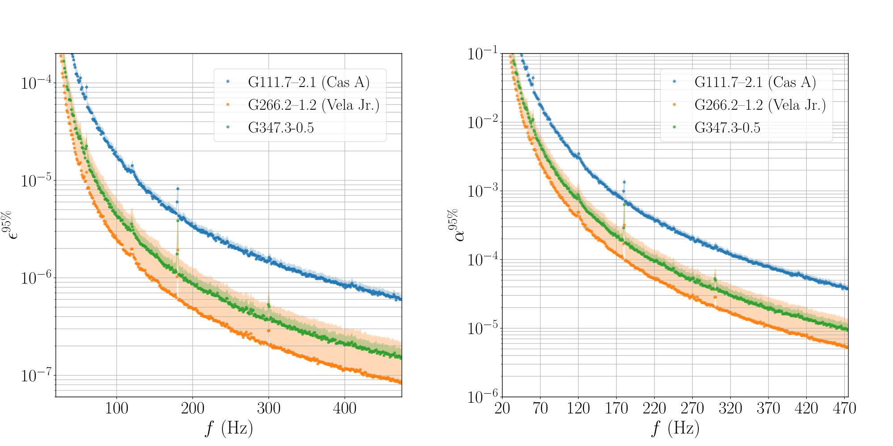
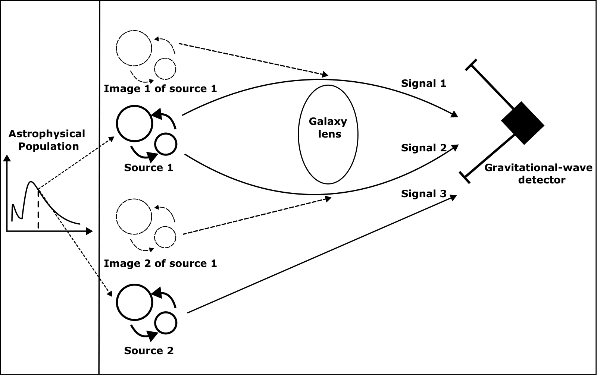
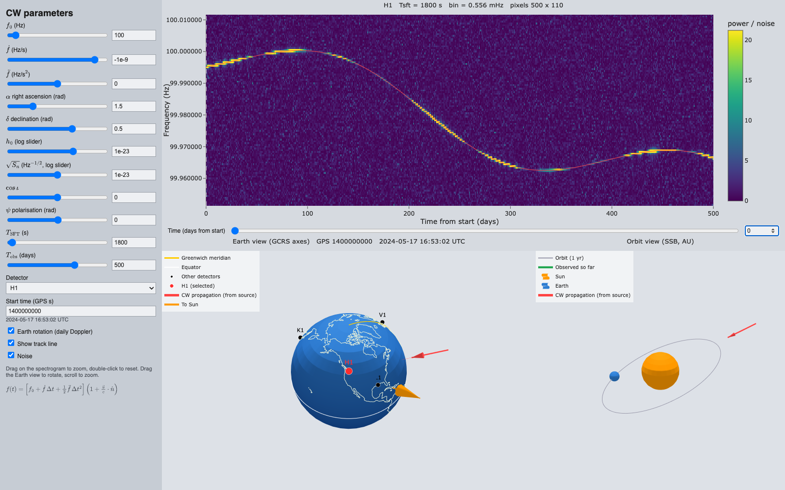

About me
I am a Ph.D. candidate in Physics at the University of Michigan, Ann Arbor, working with Prof. Keith Riles on searches for continuous gravitational waves (CW): the faint, long-lived signals expected from rapidly spinning, non-axisymmetric neutron stars. I conduct directed searches toward targets that may host non-axisymmetric neutron stars emitting relatively strong CWs, such as supernova remnants and globular clusters, using LIGO-Virgo-KAGRA data. Fingers crossed we catch the first one soon! It would be a big moment for multi-messenger astrophysics, and a whole new way to peek inside a neutron star.
Much of my work goes into making these searches faster, more robust, and more sensitive, from GPU-accelerated search methods to deep-learning approaches. I also co-chair the Directed Searches subgroup of the LVK Continuous Waves working group.
Before Michigan I studied physics at The Chinese University of Hong Kong, where I worked on gravitational-wave population inference and strong lensing.
Projects
-

Search for CWs from globular clusters in O4a data
A directed search of the sky region around each of five globular clusters, dense stellar systems that may host unseen non-axisymmetric neutron stars. We set the most stringent upper limits to date on the ellipticity and r-mode amplitude of neutron stars in these clusters.
Phys. Rev. D 114, 062001 (2026) -

Attention U-Net for all-sky CW searches
All-sky CW searches cover the whole sky and a wide parameter space, which makes conventional template-based methods computationally prohibitive. This work trained an Attention U-Net that recovers faint CW signals from noisy spectrograms. Its sensitivity is comparable to the state-of-the-art deep-learning method, with more than 50% less training cost.
Phys. Rev. D 112, 103039 (2025) -

Search for CWs from supernova remnants in O4a data
A LIGO-Virgo-KAGRA search toward 15 nearby young supernova remnants, which may host young neutron stars whose large spin-down energy budget could power detectable CWs. These are the most sensitive wide-band directed searches for CWs from supernova remnants to date.
ApJ 1004, 204 (2026) -

Population-model uncertainty in the strong-lensing Bayes factor
The Bayes factor used to identify strongly lensed pairs of gravitational-wave events depends on the assumed astrophysical population model. We derive its correct form by reweighting the parameter-estimation posteriors with the population prior, and show that nonparametric population models reduce the bias induced by a mis-specified population model.
Phys. Rev. D 111, 063012 (2025)
CW Signal Simulator

Open the interactive simulator →
Set the signal parameters to see the Doppler-modulated signal in a frequency-time spectrogram.
Zoom in and out to see the annual and daily wiggle patterns.
A 3D view shows the incoming wave direction relative to the Earth and the Sun.